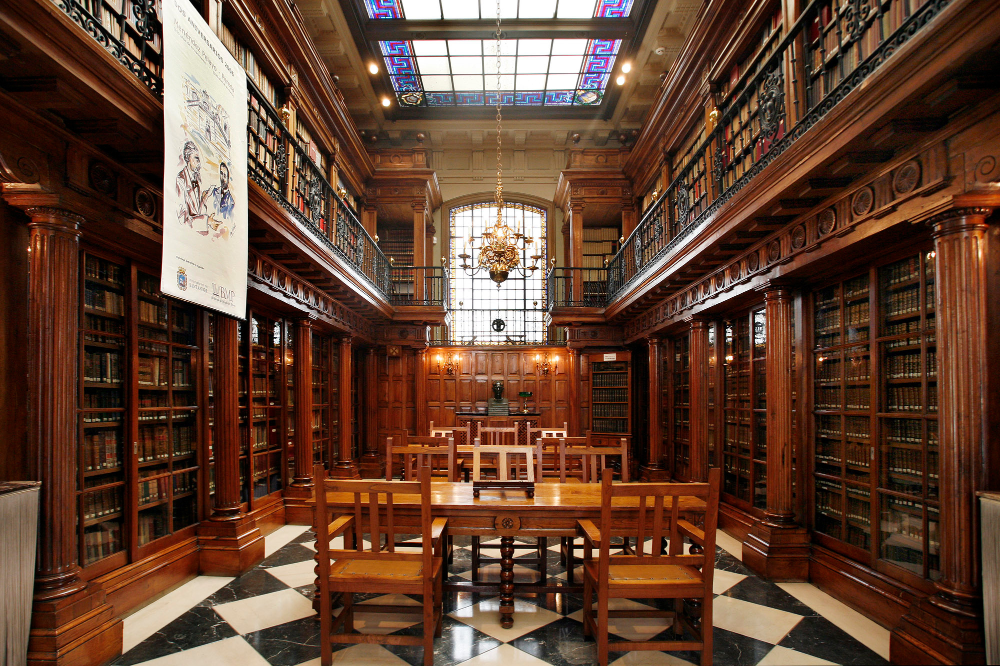
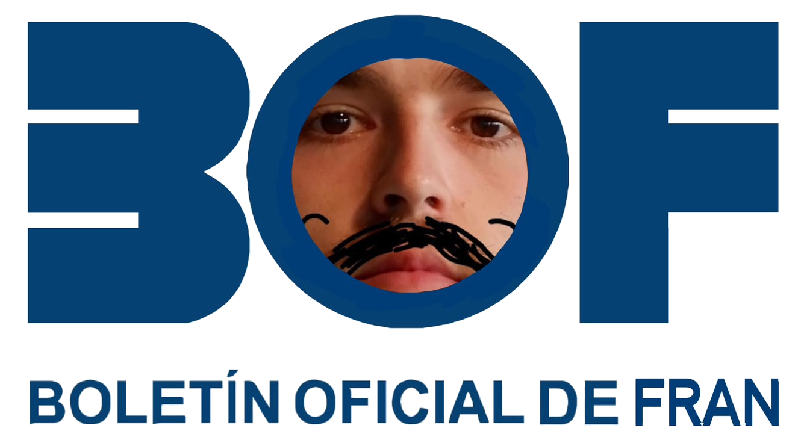
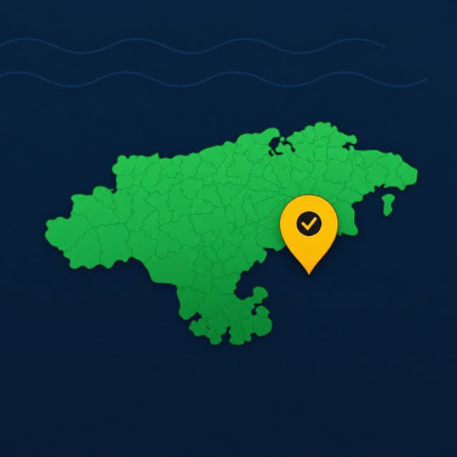
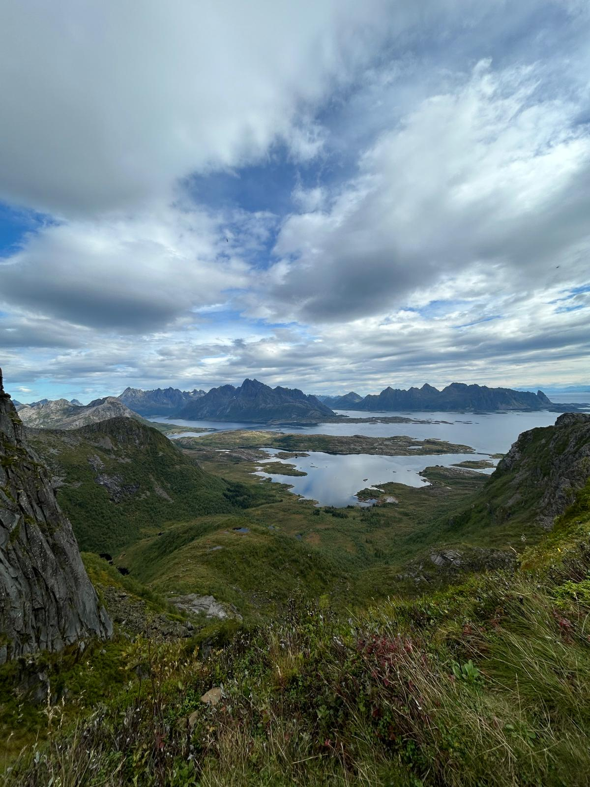
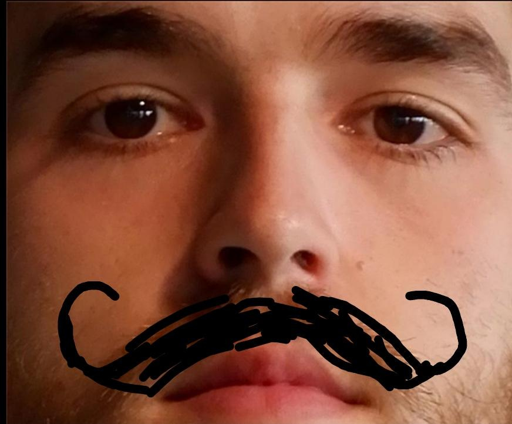
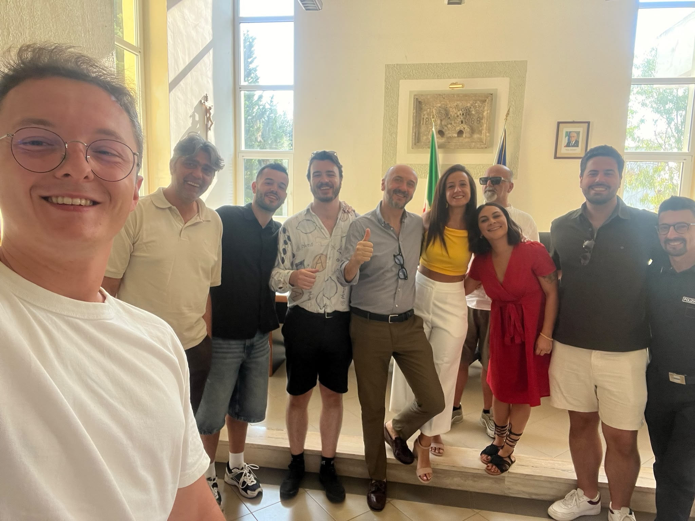

Vol XX
MM/AAAA
El boletín que viaja a lomos de una tortuga
Cuatro elefantes y Gran A'Tuin no pueden estar equivocados
“¿Inn-sewer-ants? Suena a algo que hacen los espíritus del subsuelo. Y ahora la ciudad entera está ardiendo.”
Rincewind, más o menos - El color de la magia

El Equipaje, S.L. Presunto patrocinadorCuentan que el mundo es plano y viaja por el espacio sobre cuatro elefantes, que a su vez viajan sobre el caparazón de Gran A'Tuin, una tortuga de proporciones astronómicas. Nadie sabe adónde va. Los astrónomos de Krull quisieron averiguar su sexo y para ello lanzaron una nave por el borde del mundo. No volvió, lo cual se considera un dato.
En este volumen hablamos de turistas, de magos que no saben hacer magia y de un baúl con cientos de patitas que te seguirá hasta el fin del Disco y un poco más allá.
Si al terminar te sientes algo más perdido que al empezar, enhorabuena: ya piensas como un ciudadano de Ankh-Morpork.
Índice

Mundodisco para turistas
El Equipaje
Dosflores
Cien patitas de peral sabio
Todo turista que se precie viaja con equipaje. Yo viajo con el Equipaje: un baúl de peral sabio1 que camina sobre cientos de piernecitas y me sigue a todas partes, por tierra, por mar o a través de las dimensiones.
Dentro siempre hay ropa limpia y planchada. Nadie sabe cómo. Tampoco nadie sabe qué les pasa exactamente a los ladrones que intentan abrirlo, porque ninguno ha vuelto para contarlo.
Mi guía, Rincewind, dice que es "una amenaza con bisagras". Yo prefiero decir que es leal.
- Madera mágica que no se deja impresionar por hechiceros, dioses ni recaudadores de impuestos. ↩
Inn-sewer-ants
Rincewind
El concepto más peligroso del Disco
Un turista llegó a Ankh-Morpork con una idea nueva: si tu taberna se quema, alguien te paga por ello. Lo llamó "inn-sewer-ants".
Los taberneros lo entendieron perfectamente. Demasiado bien. Esa misma semana la ciudad ardió de punta a punta, porque resultó que muchos negocios valían bastante más quemados que en pie.
Moraleja: hay ideas que conviene dejar en casa, junto al cepillo de dientes.
Universidad Invisible
El hechizo que no se quería ir
Rincewind
Un inquilino en la cabeza
Me suspendieron en la Universidad Invisible por culpa de una apuesta: abrí el Octavo y uno de los Ocho Grandes Hechizos se me metió en la cabeza. Desde entonces ningún otro hechizo quiere vivir ahí. Les da miedo el vecino.
Como resultado, mi única habilidad mágica real es correr. Pero corro muy bien. He corrido de dragones, de trolls, de sacerdotes y de la Muerte, que por cierto prefiere jugar al bridge con Guerra, Hambre y Peste antes que perseguirme.
Dicen que la magia tiene un color propio, el octarino, el octavo color del espectro. Yo solo lo he visto justo antes de que algo explote.


Municipio Patrocinado
Ankh-Morpork
La ciudad más antigua del Disco, con un río tan espeso que se puede cruzar andando y un gremio para absolutamente todo, incluidos los ladrones, que cobran por adelantado y te dan recibo.
Atractivos turísticos: la Universidad Invisible (mejor no entrar), el Tambor Remendado (mejor no salir) y un puente desde el que se puede ver el río sin que el río te vea a ti.
Agradecimientos
A Gran A'Tuin, por no haberse dado la vuelta todavía. Al Bibliotecario, por su ayuda con la documentación: "Uuk". Y, sobre todo, muchas gracias a ti, mi estimado lector.
Espero que hayas disfrutado leyendo por lo menos una fracción de lo que yo lo he hecho escribiendo.
¿Trivia!
Pregunta anterior:
¿Cuál es el octavo color del espectro en el Mundodisco?
Respuesta:
El octarino. Solo lo ven los magos y los gatos. Rincewind lo describe como una especie de púrpura verdoso-amarillento, lo cual no ayuda nada.
Pregunta de este volumen:
¿De qué madera está hecho el Equipaje de Dosflores?